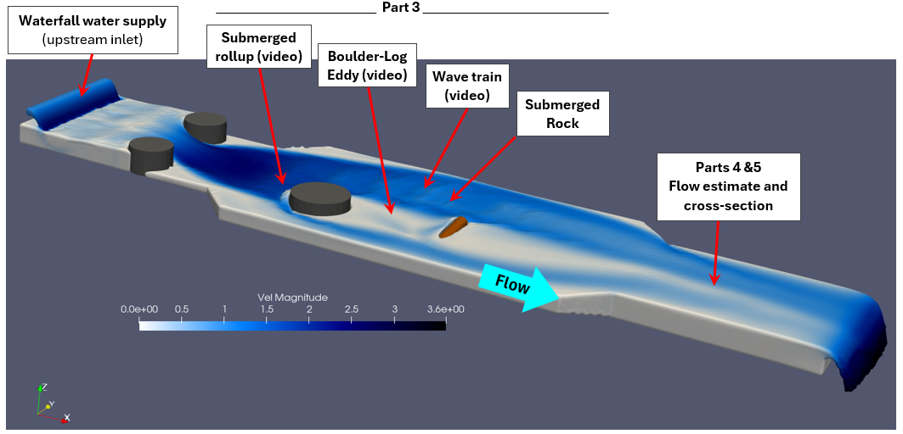
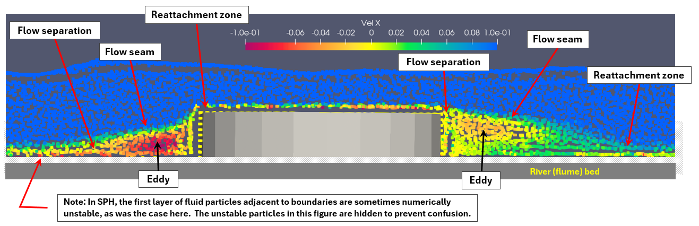
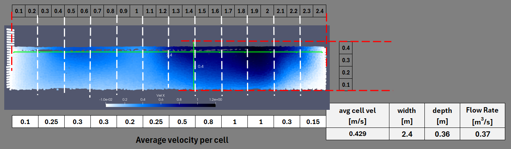

Since Maine has had several weeks of cold weather (often single digits during the night), the local rivers are
mostly frozen, therefore I have decided to create a virtual river (actually, more of a virtual flume) using the
3D computational fluid dynamics modeling (CFD) software package DualSPHysics (https://dual.sphysics.org/), which
is based on a Smooth Particle Hydrodynamics (SPH) formulation.
Site Map: The virtual river existis within my desktop computer in my home office at 199 Concord Street, Portland, Maine.
Figure 1. Site Map
Virtual Model Layout: The virtual river reach (or flume) is 14-m long and 3.6-m at its widest, there are 2 drops of 0.12-m at
the tranissions in width. The bed slope in between the drops is 0.01 m/m. The typical depth of flow is between 0.3- and 0.4-m,
except for where the flow goes super critical at the upstream drop. The SPH fluid particle size is 0.02-m and the model
consits of just over 2 million particles.
Figure 2. Flume Layout
Feature location map for virtual images & videos.

Figure 3. Feature Location Map
Part 3 - Flow Pattterns
Convergent, divergent, etc. flows, with partial mid-channel cross-section showing variation in depth.
Surface wake - standing waves associated with a hydraulic jump.
Figure 5. Wave Train
Submerged recirculating flow patterns.

Figure 6. Submerged Rock Flow Patterns
Boulder, front rollup flow pattern.
Figure 7. Flow RollUp Cross-Section - Upstream Face of Boulder
Horizontal slice just below water surface showing an eddy where the flows from a downstream log is partially feeding
eddy behind an upstream emergent boulder.
Figure 8. Compound Eddy, Flow Is From Left To Right
Parts 4 & 5 - Flow Estimate and Cross-Section
A cross-section taken at the downstream end of the river reach was used to estimate the river's flow rate.
The cross-section was divided into 12 cells, the average velocity was estimated for each cell, these were then
averaged over the entire width of the river, finally the flow was estimated by multiplying river average velocity
by width by depth.
The cross-section is taken from the perspective of a person looking upstream. The relatively low velocity zone on
river-right is a result of the flow disruption from the upstream log (see Figure 2 or 3).

Figure 9. Downstream Cross-Section And Flow Estimate
Parts 6 - Hydraulic Jump
A standing wave is produced in the upstream portion of the river reach by a combination two boulders producing
a rapid horizontal flow contraction and acceleration, the flow is further accelerated by a relatively rapid drop
in the bed elevation. This combination produced supercritical flow, a hydraulic jump,and a series of standing waves.